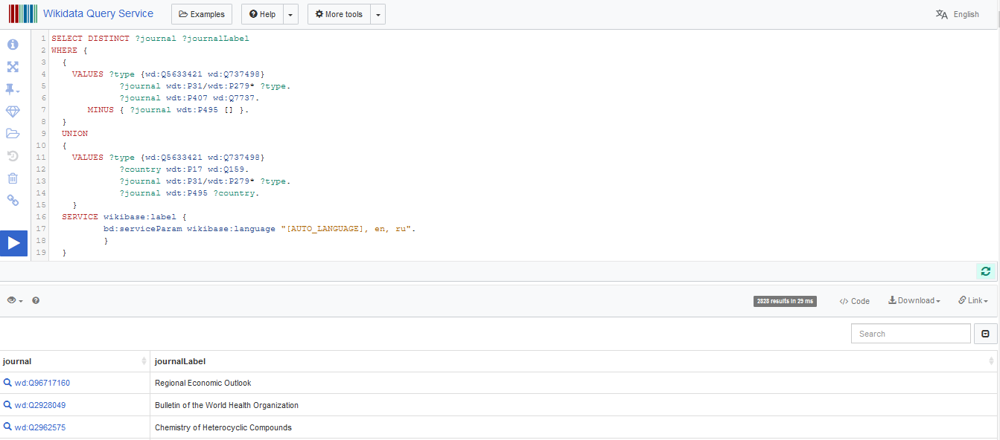
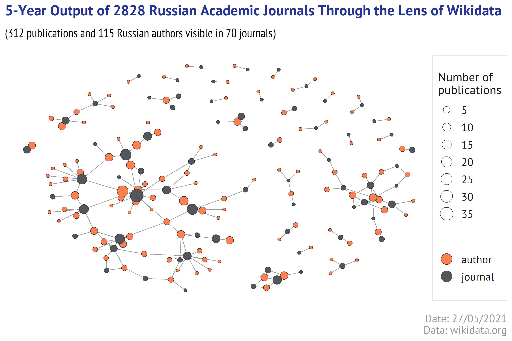

In one of the recent posts I queried portal.issn.org to harvest the journal metadata and found out that the exported pdfs contained the references to Wikidata and Wikipedia pages. What surprized me later is that just 60% of titles have Wikidata profiles, and as little as 2% have Wikipedia articles.
Like many people who have never created a page in Wikipedia, I was living peacefully with 2 myths in my mind.
Myth 1: Any academic journal can create a page in Wikipedia and inform the research community about its goals & successes. Well, I’ve changed my mind after reading the criteria listed at WikiProject_Academic_Journals. Especially, those reflecting a notability:
- Criterion 1: The journal is considered by reliable sources to be influential in its subject area.
- Criterion 2: The journal is frequently cited by other reliable sources.
- Criterion 3: The journal is historically important in its subject area.
This should explain why a number of Russian journals indexed in Scopus is almost 5 times higher than in Wikipedia.
Myth 2: Wikidata records are composed from the bits of information present on corresponding Wikipedia page. It is not true - as we have already seen for VAK titles, too many scientific journals (and also the organizations, researchers, publications, etc) have Wikidata IDs without having a dedicated page in Wikipedia.
Wikidata is indeed about the items and their relations.

By <a href=“//commons.wikimedia.org/wiki/User:HenkvD” title=“User:HenkvD”>HenkvD</a> - <span class=“int-own-work” lang=“en”>Own work</span>, CC BY-SA 4.0, Link
So if Wikipedia page includes the properly quoted Wikidata items (e.g. statements referring to the scientific articles, researchers, academic awards, etc.), the related Wikidata records will inherit those relations from Wikipedia article (I guess so).
SPARQL or how to find anything
For anyone who has never met a SPARQL query (like me few weeks ago) reading the collections of demo SPARQL queries (like below) can be a fascinating experience.
- https://www.wikidata.org/wiki/Wikidata:SPARQL_tutorial
- https://www.wikidata.org/wiki/Wikidata:SPARQL_query_service/queries
- https://www.wikidata.org/wiki/Wikidata:SPARQL_query_service/queries/examples
- https://www.wikidata.org/wiki/Wikidata:SPARQL_query_service/queries/examples/advanced
- https://github.com/sebotic/SPARQL
- https://shkspr.mobi/blog/2019/11/the-greater-bear-using-wikidata-to-generate-better-artwork/
A blend of amusement and cognitive efforts, which me personally made recalling “I like pleasure spiked with pain…”.
For those whose interests are mostly about scholarly communication and academic publishing, there is a fantastic cookbook with ready-to-go recipies. It is named Scholia.
Pick up any of the pre-set scenario (e.g. profile of Carol Greider), give a web page some time to load, and you’ll see how powerful Wikidata is thought to be. Further, under any chart or table you can click a link “Edit on query.Wikidata.org” and try/adapt a SPARQL query. I hope the creators of this service feel our vibes of love every day.
Searching Russian Academic Journals
In most databases to check if the journal is indexed, we would have to search it using a title or ISSNs. This is how it works in Web of Science, Scopus, the Lens, and many others.
With Wikidata a query must include not the trivial names (like “The Lancet”), but the identifiers of Wikidata items and properties. You can find many useful identifiers in the examples provided by Scholia, or in the list of bibliographic properties, or using Wikidata search.
My initial query sounded like this - to find the items that are defined (wdt:P31/wdt:P279*) as Scientific or Academic journal (wd:Q5633421 wd:Q737498) originated from (P495) a country named (17) Russian Federation (Q159).
But soon I found out that some academic journals that publish in Russian, but have no a property “country” that would connect it to Russia. Thus we have to add another condition - find the items that are defined (wdt:P31/wdt:P279*) as Scientific or Academic journal (wd:Q5633421 wd:Q737498) whose language of work (P407) is Russian (Q7737).
In SPARQL the combined query looks like this:
SELECT DISTINCT ?journal ?journalLabel WHERE {
{VALUES ?type {wd:Q5633421 wd:Q737498}
?journal wdt:P31/wdt:P279* ?type.
?journal wdt:P407 wd:Q7737.
MINUS { ?journal wdt:P495 [] }.
}
UNION
{VALUES ?type {wd:Q5633421 wd:Q737498}
?country wdt:P17 wd:Q159.
?journal wdt:P31/wdt:P279* ?type.
?journal wdt:P495 ?country.
}
SERVICE wikibase:label {bd:serviceParam wikibase:language "[AUTO_LANGUAGE], en, ru".}
}You can see the results of this SPARQL query at Wikidata Query Service, further named as WDQS.
Show code
knitr::include_graphics(paste0(img_dir, "wiki_query.png"))

The results can be saved from WDQS using the button Download (JSON, CSV). To perform a SPARQL query in R and retrieve the results I use WikidataQueryServiceR package, which I found very convenient. A function named query_wikidata accepts a string with a SPARQL query and return a dataframe.
Show code
res_journals <- WikidataQueryServiceR::query_wikidata(
as.character(
'SELECT DISTINCT ?journal ?journalLabel
WHERE {
{VALUES ?type {wd:Q5633421 wd:Q737498}
?journal wdt:P31/wdt:P279* ?type.
?journal wdt:P407 wd:Q7737.
MINUS { ?journal wdt:P495 [] }.
}
UNION
{VALUES ?type {wd:Q5633421 wd:Q737498}
?country wdt:P17 wd:Q159.
?journal wdt:P31/wdt:P279* ?type.
?journal wdt:P495 ?country.
}
SERVICE wikibase:label {
bd:serviceParam wikibase:language "[AUTO_LANGUAGE], en, ru".
}
}
LIMIT 5')
)
The </>Code button at WDQS also helps to wrap the SPARQL syntax for the different languages. But for R a suggested library is SPARQL, which I did not try (it seems like it was not updated for quite a long time).
In order to retrieve more fields from Wikidata records the query must be upgraded (I am not sure if the one below is optimal, but it works).
SELECT DISTINCT ?journal ?journal_title ?issnL ?cref_jid
?lang ?article ?url ?url_srcLabel ?indexedLabel ?scopus
WITH {
SELECT DISTINCT ?journal
WHERE {
{VALUES ?type {wd:Q5633421 wd:Q737498}
?journal wdt:P31/wdt:P279* ?type.
?journal wdt:P407 wd:Q7737.
MINUS { ?journal wdt:P495 [] }.}
UNION
{VALUES ?type {wd:Q5633421 wd:Q737498}
?country wdt:P17 wd:Q159.
?journal wdt:P31/wdt:P279* ?type.
?journal wdt:P495 ?country.}
}
} AS %result
WHERE {
INCLUDE %result
optional {?journal p:P856 ?urlx.
?urlx ps:P856 ?url.
?urlx prov:wasDerivedFrom ?refnode2.
?refnode2 pr:P143 ?url_src.}
optional {?journal wdt:P1476 ?journal_title.}
optional{?article schema:about ?journal ;
schema:inLanguage ?lang ;
schema:isPartOf [ wikibase:wikiGroup "wikipedia" ] .
}
optional {?journal wdt:P7363 ?issnL.}
optional {?journal wdt:P8375 ?cref_jid.}
optional {?journal wdt:P8875 ?indexed.}
optional {?journal wdt:P1156 ?scopus.}
SERVICE wikibase:label {
bd:serviceParam wikibase:language "[AUTO_LANGUAGE], en, ru".
?url_src rdfs:label ?url_srcLabel .
?indexed rdfs:label ?indexedLabel.
}
}The code snippet below shortens the enquoted SPARQL query, so most likely you will not be able to see it in the code, but you can copy it from above and make a query at WDQS.
Found Journals
Show code
wiki_journals_raw_file <- paste0(onedrive,
"/Wikidata/Wiki_Journals/blog_russian_wikidata_journals_raw.csv")
if(!file.exists(wiki_journals_raw_file)){
rus_wiki_journals <- query_wikidata(as.character(
[1496 chars quoted with '''])
)
rus_wiki_journals %>% distinct() %>% write_excel_csv(wiki_journals_raw_file)
} else {
rus_wiki_journals <- read_csv(wiki_journals_raw_file,
col_types = cols(.default = col_character(),
web_site = col_integer(),
n_languages = col_integer()
)
)
}
rus_wiki_journals %>% arrange(journal_title) %>% head(20) %>%
## extracting Wikidata URLs into IDs
mutate(journal = str_extract(journal, "Q\\d+$")) %>%
## shortening the wikipedia Article URLs as they can be too long for tables
mutate(article = ifelse(is.na(article), NA,
paste0(str_sub(article, 1,30),"..."))) %>%
datatable(rownames = FALSE, filter = "none",
escape = FALSE, class = "row-border",
options = list(columnDefs = list(
list(width = '70px', targets = c(2)),
list(width = '200px', targets = c(1,5,8)))
)
)
As some fields (ISSN, Wikipedia page, language, etc) contain multiple values, the resulting dataframe has degenerate rows. I used the Wikidata items and ISSN-L as grouping variables to glue up the string values in the other columns, and finally get a table where each row corresponds to unique journal.
Show code
wiki_journals_grouped_file <- paste0(onedrive,
"/Wikidata/Wiki_Journals/blog_russian_wikidata_journals_grouped.csv")
if(!file.exists(wiki_journals_grouped_file)){
rus_wiki_journals_grouped <- rus_wiki_journals %>%
mutate(wiki = str_extract(journal, "Q\\d+$")) %>%
select(wiki, journal_title, issnL, cref_jid, scopus, lang,
wiki_article = article, web_site = url, indexed_in = indexedLabel) %>%
group_by(wiki, issnL) %>%
summarize(
journal_title = paste0(unique(na.omit(journal_title)), collapse = "|"),
crossref = paste0(unique(na.omit(cref_jid)), collapse = "|"),
scopus = paste0(unique(na.omit(scopus)), collapse = "|"),
web_site = n_distinct(web_site, na.rm = TRUE),
languages = paste0(unique(na.omit(lang)), collapse = "|"),
n_languages = n_distinct(lang, na.rm = TRUE),
indexed_in = paste0(unique(na.omit(indexed_in)), collapse = "|")
) %>% ungroup() %>%
mutate_all(~ifelse(.x=="",NA,.x))
rus_wiki_journals_grouped %>% write_excel_csv(wiki_journals_grouped_file)
} else {
rus_wiki_journals_grouped <- read_csv(wiki_journals_grouped_file,
col_types = cols(.default = col_character(),
web_site = col_integer(),
n_languages = col_integer()))
}
rus_wiki_journals_grouped %>% arrange(journal_title) %>% head(20) %>%
datatable(rownames = FALSE, filter = "none",
escape = FALSE, class = "row-border",
options = list(columnDefs = list(
list(width = '350px', targets = c(2)))))
Or Lost Journals
Wikidata returned a list of 2828 Russian journals, in which:
97.3% have ISSN-L,
90.0% have CrossRef Journal ID,
3.0% have official web site URL,
4.9% have Wikipedia articles in at least one language, 2.2% have Wikipedia articles in more than 1 language.
20.9% according to Wikidata are indexed in in bibliographic review(s) and/or database(s).
Let’s check if being indexed is associated with a higher chances of having a Wikipedia article.
Show code
rus_wiki_journals_grouped %>%
mutate(languages = !is.na(languages), indexed_in = !is.na(indexed_in)) %>%
count(indexed_in, languages) %>%
mutate(share = percent(n/nrow(rus_wiki_journals_grouped),0.1)) %>%
datatable(rownames = FALSE, filter = "none",
escape = FALSE, class = "row-border",
options = list(autoWidth = FALSE,
columnDefs = list(
list(className = 'dt-center', targets = c(0:3)))))
The indexed titles more often have Wikipedia articles, but more than a half of those having the article(s) in Wikipedia are not indexed (according to Wikidata) in any prominent bibliographic databases.
How complete is Wikidata?
One may suggest that if Wikidata import (in some way or other) the data from CrossRef, then why to bother about it, as CrossRef provides fantastic API-services and gets the metadata directly from the publishers.
Let’s first check whether Wikidata contains complete data deposited in CrossRef.
I select as an example a German journal named Atmospheric Chemistry and Physics, published since 2001. Its Scholia profile looks quite impressive.
And yet…
- Wikidata contains approx 5.5k articles - check
- CrossRef contains more than 11.7k publications - check
For 2019 publications the difference is still substantial:
And I also counted a number of authors with ORCID in 2019 articles:
Wikidata returs a list of 163 researchers - check
CrossRef does not return the researchers, but we can obtain a list of publications where at least one of the authors has ORCID. There were 749 such articles - check. I looked into the search results and identified 1808 researchers with unique ORCIDs.
Any chance for Wikidata-based bibliometrics?
As Wikidata does not contain all publications from CrossRef, it should not be viewed as an alternative to CrossRef or other databases indexing the academic journals cover-to-cover.
Let’s try to extract all publications in the previously found 2828 Russian journals, satisfying next 3 condistions:
- published in 2016-2020
- present in Wikidata (i.e. owning the Wikidata ID)
- authored by the researchers who also present in Wikidata.
For speed we will retrieve just journal IDs, publication IDs, and author IDs.
SELECT ?journal ?work ?author ?country
WITH {
SELECT DISTINCT ?journal
WHERE {
{VALUES ?type {wd:Q5633421 wd:Q737498}
?journal wdt:P31/wdt:P279* ?type.
?journal wdt:P407 wd:Q7737.
MINUS { ?journal wdt:P495 [] }.}
UNION
{VALUES ?type {wd:Q5633421 wd:Q737498}
?country wdt:P17 wd:Q159.
?journal wdt:P31/wdt:P279* ?type.
?journal wdt:P495 ?country.}
}
} AS %result
WHERE {
INCLUDE %result
?work wdt:P1433 ?journal.
?work wdt:P577 ?pubdate.
?work wdt:P50 ?author.
?author wdt:P27 wd:Q159.
FILTER((?pubdate >= "2016-01-01T00:00:00Z"^^xsd:dateTime) &&
(?pubdate <= "2020-12-31T00:00:00Z"^^xsd:dateTime))
}
This SPARQL query is very strict, as it filters the items at every condition. Clearly some journals may have the articles that are present in Wikidata, but have no “publication date” property or its authors have no Wikidata ID. Such articles will not be retrieved by this query.
Show code
wiki_journals_2016_2020_file <- paste0(onedrive,
"/Wikidata/Wiki_Journals/blog_russian_wikidata_journals_2016_2020.csv")
if(!file.exists(wiki_journals_2016_2020_file)){
wiki_journals_2016_2020 <- query_wikidata(as.character(
'SELECT ?journal ?work ?author ?country
WITH {
SELECT DISTINCT ?journal
WHERE {
{VALUES ?type {wd:Q5633421 wd:Q737498}
?journal wdt:P31/wdt:P279* ?type.
?journal wdt:P407 wd:Q7737.
MINUS { ?journal wdt:P495 [] }.}
UNION
{VALUES ?type {wd:Q5633421 wd:Q737498}
?country wdt:P17 wd:Q159.
?journal wdt:P31/wdt:P279* ?type.
?journal wdt:P495 ?country.}
}
} AS %result
WHERE {
INCLUDE %result
?work wdt:P1433 ?journal.
?work wdt:P577 ?pubdate.
?work wdt:P50 ?author.
?author wdt:P27 wd:Q159.
FILTER((?pubdate >= "2016-01-01T00:00:00Z"^^xsd:dateTime) &&
(?pubdate <= "2020-12-31T00:00:00Z"^^xsd:dateTime))
}
')
)
wiki_journals_2016_2020 %>% distinct() %>% write_excel_csv(wiki_journals_2016_2020_file)
} else {
wiki_journals_2016_2020 <- read_csv(wiki_journals_2016_2020_file,
col_types = cols(.default = col_character()))
}
What have we got?
70 unique journals (which is 2.5%)
312 unique publications
115 unique authors
Tempted to see a pretty picture?
Show code
chart_filename <- paste0(img_dir, "5_year_output.png")
if(!file.exists(chart_filename)){
library(igraph)
library(ggraph)
library(tidygraph)
library(extrafont)
sizes <- bind_rows(
wiki_journals_2016_2020 %>%
group_by(journal) %>%
summarize(n_pubs = n_distinct(work)) %>%
ungroup() %>% rename(name = 1),
wiki_journals_2016_2020 %>%
group_by(author) %>%
summarize(n_pubs = n_distinct(work)) %>%
ungroup() %>% rename(name = 1)
)
g <- wiki_journals_2016_2020 %>%
select(from = author, to = journal) %>%
graph_from_data_frame(directed = FALSE) %>%
as_tbl_graph() %>%
left_join(sizes) %>%
mutate(type = ifelse(name %in% wiki_journals_2016_2020$journal,
"journal", "author"))
ggraph(g, layout = "nicely") +
geom_edge_link0(color = "grey60", edge_width = 0.3)+
geom_node_point(aes(x = x, y = y, fill = type, size = n_pubs),
shape = 21, stroke = 0.3, color = "grey20")+
scale_fill_manual(values = c("journal" = "#53565A", "author" = "coral"),
name = NULL)+
labs(title =
"5-Year Output of 2828 Russian Academic Journals Through the Lens of Wikidata",
subtitle = paste0("(",n_distinct(wiki_journals_2016_2020$work),
" publications and ",
n_distinct(wiki_journals_2016_2020$author),
" Russian authors visible in ",
n_distinct(wiki_journals_2016_2020$journal),
" journals)"),
caption = paste0("Date: ", format(Sys.time(), '%d/%m/%Y'),
"\nData: wikidata.org"))+
scale_size_continuous(range = c(1.5,6), breaks = pretty_breaks(6),
name = "Number of\npublications")+
guides(fill = guide_legend(override.aes = list(size = 5)))+
theme_graph() +
theme(text=element_text(family="PT Sans", color = "#53565A", size = 12),
legend.title = element_text(size=rel(1), color="grey10"),
legend.text = element_text(size=rel(0.9), color="grey10"),
legend.position = "right",
legend.box.background = element_rect(size = 0.2,
color = "grey90", fill = "white"),
legend.box.margin = margin(10,0,10,0),
legend.box.spacing = unit(0,"cm"),
plot.caption.position = "plot",
plot.caption = element_text(size = rel(0.9), hjust=1,
family = "PT Sans", color = "#969696", face = "plain"),
plot.subtitle = element_text(hjust=0, size = rel(1),
family="PT Sans Narrow"),
plot.title.position = "plot",
plot.title = element_text(size=rel(1.2), family="PT Sans",
face="bold", color = "#253494"),
plot.margin = margin(5, 5, 5, 5)) +
ggsave(chart_filename, width = 18, height = 12, dpi = 400, units = "cm")
}
knitr::include_graphics(chart_filename)

Cases for using Wikidata
There are still some cases that can be much easier solved with Wikidata. As a knowledge graph connecting the entities of different nature, Wikidata allows to build complex queries combining the items properties or statements that may not exist together in any other single database.
Just imagine a query that retrieves the journal authors having the international awards (see examples in Scholia).
Well, one may argue that the qualified editor remember by heart all the star authors. Hope so.
Let’s take a more complex scenario. Assume that the publisher decided to dedicate a special issue to women in Molecular biology and the editor now has to find the female researchers who won the international awards and ask them kindly to write a short article. The editor may think that those who cited the journal articles would be more impressed and likely to agree.
Can Wikidata help to this? Yes, it can!
A SPARQL query below will retrieve a list of women, researchers, who won the international awards and cited the Russian journal Molecular Biology.
SELECT
?authorLabel ?orcid ?awards
WITH {
SELECT ?authorLabel ?author (GROUP_CONCAT(DISTINCT(?award); separator=" | ") AS ?awards)
WHERE {
?work wdt:P1433 wd:Q4300349.
?reference_pub wdt:P2860 ?work.
?reference_pub wdt:P50 ?author .
?author p:P166 ?award_statement.
?award_statement ps:P166 ?award_.
?author wdt:P21 wd:Q6581072 .
SERVICE wikibase:label {
bd:serviceParam wikibase:language "[AUTO_LANGUAGE],en" .
?award_ rdfs:label ?award.
?author rdfs:label ?authorLabel
}
}
GROUP BY ?author ?authorLabel
} AS %result
WHERE {
INCLUDE %result
optional{?author wdt:P496 ?orcid .}
SERVICE wikibase:label { bd:serviceParam wikibase:language "[AUTO_LANGUAGE],en" . }
}Show code
winners <- query_wikidata(as.character(
'SELECT
?author ?orcid ?awards
WITH {
SELECT ?authorLabel ?author
(GROUP_CONCAT(DISTINCT(?award); separator=" | ") AS ?awards)
WHERE {
?work wdt:P1433 wd:Q4300349.
?reference_pub wdt:P2860 ?work.
?reference_pub wdt:P50 ?author .
?author p:P166 ?award_statement.
?award_statement ps:P166 ?award_.
?author wdt:P21 wd:Q6581072 .
SERVICE wikibase:label {
bd:serviceParam wikibase:language "[AUTO_LANGUAGE],en" .
?award_ rdfs:label ?award.
?author rdfs:label ?authorLabel
}
}
GROUP BY ?author ?authorLabel
} AS %result
WHERE { INCLUDE %result
optional{?author wdt:P496 ?orcid .}
SERVICE wikibase:label {
bd:serviceParam wikibase:language "[AUTO_LANGUAGE],en" .
}
}')
)
winners %>% mutate(author = str_extract(author, "Q\\d+$")) %>%
datatable(rownames = FALSE, filter = "none",
escape = FALSE, class = "row-border",
options = list(
columnDefs = list(
list(width = '130px', targets = c(1)),
list(width = '800px', targets = c(2)))))
Coincidentally, today I saw a tweet of Scholia creator who also shared a SPARQL query crafted to find a female speaker on a certain topic. This is another possible application, even closer to reality than mine.
looking for a female speaker? Try @wikidata: https://t.co/vW21zqQGGO Tune the subjects in line 3 to fit your needs. Here, I used metabolomics, data analysis, chemometrics, lipidomics
— Egon Willighⓐgen (@egonwillighagen) May 24, 2021
The topics are ‘main subject’ of publications on which the scholar is author pic.twitter.com/FIwBjxPDSI
Final Remarks
Wikidata is a fantastic open tool that can be very useful for the academic journals. Its only limit is an amount of information that is growing and can be edited.
Russian academic journals have a very poor representation both in Wikipedia (4.9% of 2828 academic/scientific journals) and in Wikidata (few connections to the publications and the researchers).
Russian publishers & editors may need more consulting support to meet the technical requirements & notability criteria erected by WikiProject_Academic_Journals. With dozens of workshops every year on “how to get to Scopus”, I can not recall any good events devoted to Wikipedia or Wikidata for academic journals. The program of the 9th International Scientific and Practical Conference “World-Class Scientific Publication – 2021: Global Trends and National Priorities”, held in Moscow from 24 to 27 May, neglects this topic as well.
Useful links
Here are some useful sources in addition to those mentioned above:
- Wikipedia and Wikidata courses
- Wikidata Tours explain how Wikidata works
- Search Item in Wikidata
- Create Wikidata Item
- Tutorial on how to annotate the scientific publications
- Wikidata Tools - a directory of tools created for editing Wikidata items.
- A very detailed scientific article Scholia, Scientometrics and Wikidata from Wikidata’s creators
- Wikidata Weekly Status Updates - very useful newsletters with a lot of links, tutorials, examples.
- Scholia Text to Topics a text processing web application. Accepts the text, returns the topics with Wikidata IDs.
Limitations
The findings above should be taken with a pinch of salt, as I started to dig into Wikidata just few weeks ago. Some of my statements can be not perfectly correct or even wrong. The main purpose of this post was to share my finding and show what is possible to do with Wikidata.
Acknowledgments
Allaire J, Xie Y, McPherson J, Luraschi J, Ushey K, Atkins A, Wickham H, Cheng J, Chang W, Iannone R (2021). rmarkdown: Dynamic Documents for R. R package version 2.7, <URL: https://github.com/rstudio/rmarkdown>.
Chang, W (2014). extrafont: Tools for using fonts. R package version 0.17, <URL: https://CRAN.R-project.org/package=extrafont>.
Csardi G, Nepusz T (2006). “The igraph software package for complex network research.” InterJournal, Complex Systems, 1695. <URL: https://igraph.org>.
Henry L, Wickham H (2020). purrr: Functional Programming Tools. R package version 0.3.4, <URL: https://CRAN.R-project.org/package=purrr>.
Pedersen T (2021). ggraph: An Implementation of Grammar of Graphics for Graphs and Networks. R package version 2.0.5, <URL: https://CRAN.R-project.org/package=ggraph>.
Pedersen T (2020). tidygraph: A Tidy API for Graph Manipulation. R package version 1.2.0, <URL: https://CRAN.R-project.org/package=tidygraph>.
Popov M (2020). WikidataQueryServiceR: API Client Library for ‘Wikidata Query Service’. R package version 1.0.0, <URL: https://CRAN.R-project.org/package=WikidataQueryServiceR>.
Wickham H (2020). tidyr: Tidy Messy Data. R package version 1.1.2, <URL: https://CRAN.R-project.org/package=tidyr>.
Wickham H (2016). ggplot2: Elegant Graphics for Data Analysis. Springer-Verlag New York. ISBN 978-3-319-24277-4, <URL: https://ggplot2.tidyverse.org>.
Wickham H (2019). stringr: Simple, Consistent Wrappers for Common String Operations. R package version 1.4.0, <URL: https://CRAN.R-project.org/package=stringr>.
Wickham H, Francois R, Henry L, Muller K (2021). dplyr: A Grammar of Data Manipulation. R package version 1.0.3, <URL: https://CRAN.R-project.org/package=dplyr>.
Wickham H, Hester J (2020). readr: Read Rectangular Text Data. R package version 1.4.0, <URL: https://CRAN.R-project.org/package=readr>.
Wickham H, Seidel D (2020). scales: Scale Functions for Visualization. R package version 1.1.1, <URL: https://CRAN.R-project.org/package=scales>.
Xie Y (2020). knitr: A General-Purpose Package for Dynamic Report Generation in R. R package version 1.30, <URL: https://yihui.org/knitr/>.
Xie Y (2015). Dynamic Documents with R and knitr, 2nd edition. Chapman and Hall/CRC, Boca Raton, Florida. ISBN 978-1498716963, <URL: https://yihui.org/knitr/>.
Xie Y (2014). “knitr: A Comprehensive Tool for Reproducible Research in R.” In Stodden V, Leisch F, Peng RD (eds.), Implementing Reproducible Computational Research. Chapman and Hall/CRC. ISBN 978-1466561595, <URL: http://www.crcpress.com/product/isbn/9781466561595>.
Xie Y, Allaire J, Grolemund G (2018). R Markdown: The Definitive Guide. Chapman and Hall/CRC, Boca Raton, Florida. ISBN 9781138359338, <URL: https://bookdown.org/yihui/rmarkdown>.
Xie Y, Cheng J, Tan X (2021). DT: A Wrapper of the JavaScript Library ‘DataTables’. R package version 0.17, <URL: https://CRAN.R-project.org/package=DT>.
Xie Y, Dervieux C, Riederer E (2020). R Markdown Cookbook. Chapman and Hall/CRC, Boca Raton, Florida. ISBN 9780367563837, <URL: https://bookdown.org/yihui/rmarkdown-cookbook>.